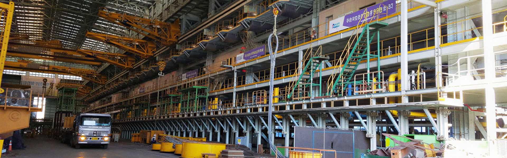
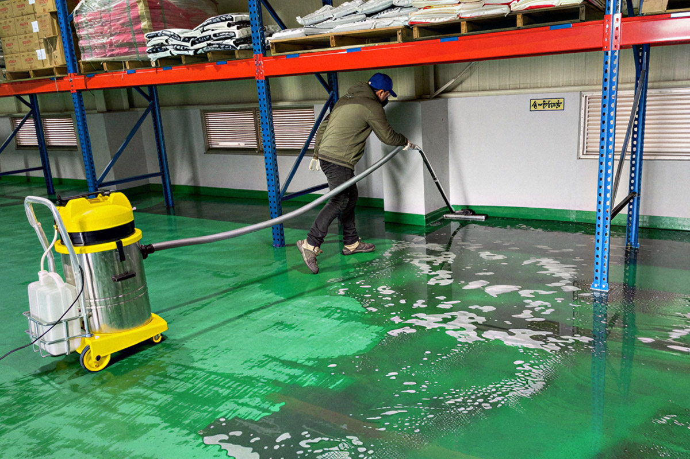

공장바닥 청소 갤러리
공장 바닥 청고 과정을 확인 할 수 있습니다


슬러시, 분진, 기름등으로 오염된 바닥을 깨끗하게 청소하는 작업으로
숙련된 작업자들이 공장 바닥을 깔끔하게 청소합니다.
청소 작업으로 인한 작업 환경 개선
산업 재해 방지로 안전 확보
작업환경 개선으로 작업 집중/효율 향상
공장 바닥 청고 과정을 확인 할 수 있습니다
공장 바닥 / 공장사무실 / 보일러실 / 창고 / 계단 등 공장 시설의 바닥이 청소 대상입니다
공장
바닥
창고
사무실
기계실
보일러실
계단
사진과 영상 갤러리에서 더 많은 청소 과정을 확인 할 수 있습니다